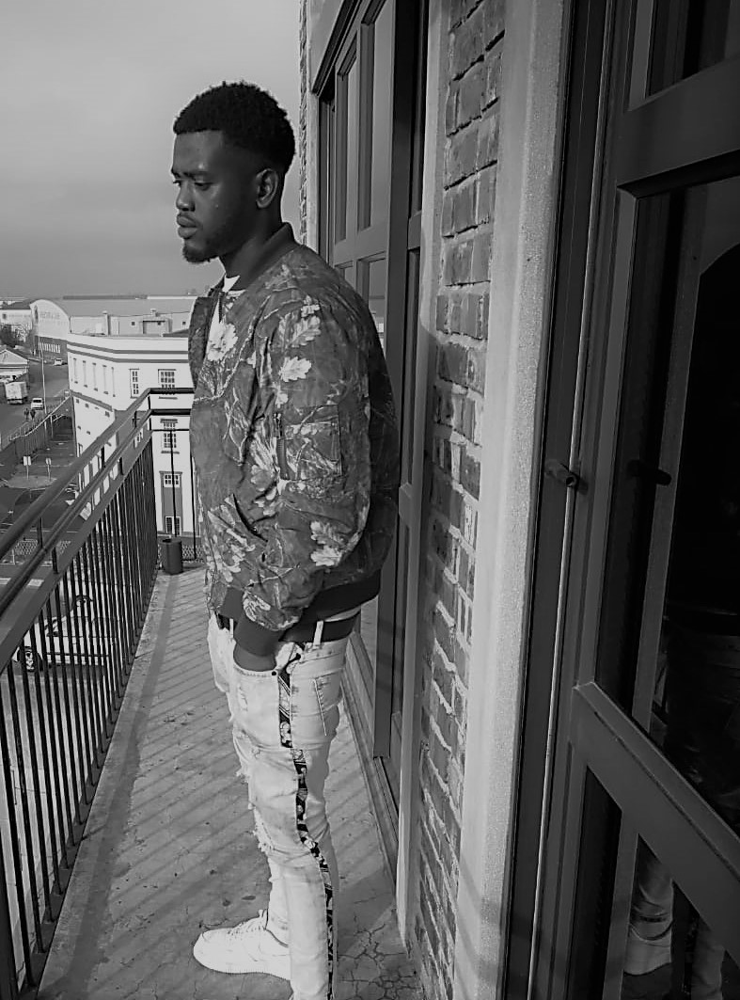

Education
High School
- Vista High Bookap
-
Grade 8(2011-2012)
- Oude Molen School Of Science And Technology
-
Grade 9(2012-2013)
- Green Land Academy
-
Grade 10-12(2013-2016)
-
Where I completed my High Education and attained my o'level certificatefor both WAEC & NECO
Subjects taken during my o'levels
- Subjects Offered:
-
Maths
-
English
-
Biology
-
Geography
-
Physics
-
Chemistry
-
Technical Drawing
-
Civic Education
-
Catering And Craft Education
University
- INHURD
-
Attainted INHURD(Institute for Human and resources Development)
- Time Duration:1 year
- Funaab
-
Attainted Federal University of Abeokuta(Agromentolgy and Water Resources)
-
Time Duration:3 years
Coding Experince
- Web Academy (1 month)
-
Code space Web Academy during this time I was introduced to basic HTML, CSS, javascript and 21st-century skills. Which I had multiple projects to do, in the 21st-century class I was taught how to adapt to my working space and also how to use design thinking to solve issues.
- Web Intensive (3 months)
-
Code space Web Intensuve was a full time development program which equipped me with more skills which had to do with CSS, javascript, HTML,bootstrap, jquery, PHP.
During the period of the program, we had an international group from german who had multiple workshops with us, we also had more 21st-century skills in which I got equipped with the double diamond way of thinking to find a solution to a problem.
Projects
- Weather App
-
Created a weather-app using CSS and HTML: 5, which I did by implementing a weather API key so that it outputs the correct weather to my user for the particular
location and what my users should wear when they input the temperature of their location.
- Tribute project
- A tribute website dedicated to a South African hero highlighting there achievements and contributions to our modern society
- Recipe-challenge
-
The recipe project was a web site that gives the user direction on how to make a West African dish called fried rice and chicken, I also added a tutorial video so the users can watch the video and follow the steps visually.
Project Work

- Contact
- Gmail
-
olaakinde16@gmail.com
- Phone number
-
0788212452